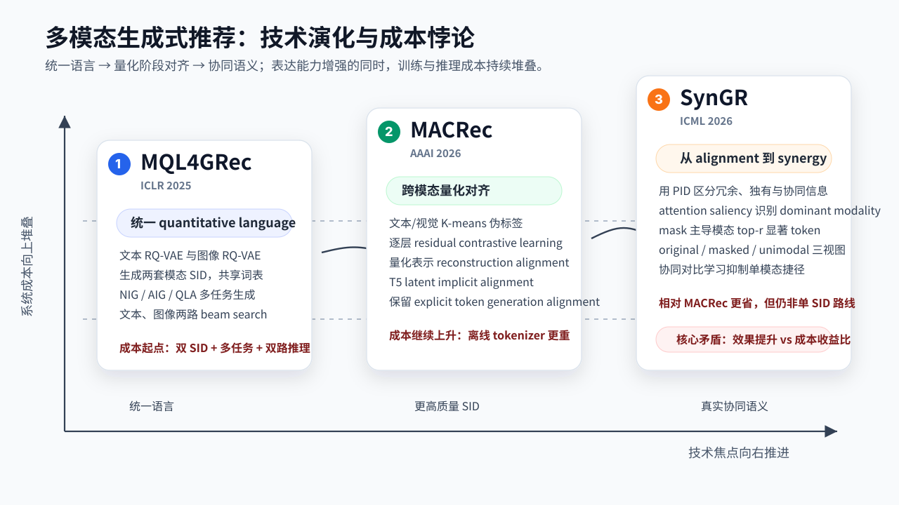
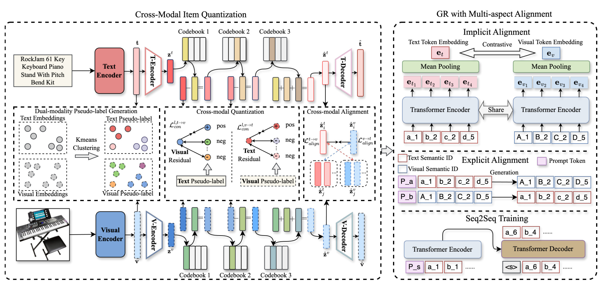

从 MQL4GRec 到 MACRec 再到 SynGR：多模态生成式推荐的技术演化与工程取舍
基本信息
| 字段 | 内容 |
|---|---|
| 类型 | 技术脉络文章；基于三篇已有精读笔记的综合陈述 |
| 关联主题 | 多模态生成式推荐、Semantic ID、RQ-VAE、跨模态对齐、协同语义 |
| 写作日期 | 2026-05-22 |
| 关联论文一 | MQL4GRec: Multimodal Quantitative Language for Generative Recommendation；OpenReview: https://openreview.net/forum?id=v7YrIjpkTF |
| 关联论文二 | MACRec: Multi-Aspect Cross-modal Quantization for Generative Recommendation；arXiv: https://arxiv.org/abs/2511.15122 |
| 关联论文三 | SynGR: Unleashing the Potential of Cross-Modal Synergy for Generative Recommendation；arXiv: https://arxiv.org/abs/2605.18920 |
| 关联本站页面 | MQL4GRec: https://liuzhao09.github.io/papers/mql4grec.html；MACRec: https://liuzhao09.github.io/papers/macrec.html；SynGR: https://liuzhao09.github.io/papers/syngr.html |
| 本地 PDF | 不适用；本文是基于三篇既有精读笔记的技术脉络文章，不新增单篇论文 PDF |
| 历史重复 | 三篇单篇笔记已存在；本文为新的横向综合文章，不替代单篇精读 |
一句话结论
MQL4GRec、MACRec 和 SynGR 构成了一条很清楚的多模态生成式推荐演化线：MQL4GRec 先把文本和图像 item 内容翻译成统一 quantitative language，让推荐进入多模态 token generation 范式；MACRec 随后发现两套 SID 在量化阶段仍然各学各的，于是把跨模态交互前移到 RQ-VAE residual quantization，并在生成模型里继续做隐式和显式对齐；SynGR 再进一步指出 alignment 不等于 synergy，模型即使拿到多模态 token，也可能继续依赖文本等 dominant modality 的捷径，所以它用显著性遮蔽和协同对比学习逼迫模型利用联合语义。
这条路线的学术逻辑是连续且严谨的：统一语言、提升 ID 质量、释放跨模态协同，每一篇都在修补上一篇留下的问题。但它也从起点就不是轻量路线。MQL4GRec 一开始就采用文本与图像双 SID、多任务生成、双路 beam search 和 reranking；MACRec 又增加跨模态伪标签、逐层 residual contrastive learning、量化表示对齐和 T5 latent alignment；SynGR 虽然相对 MACRec 更省，但仍建立在多模态 token 序列和多视图训练之上。对工业推荐系统而言，这更像一条探索多模态生成推荐表达上限的研究路线，而不是一条天然适合高 QPS 主召回的低成本部署路线。
背景与问题
生成式推荐从传统的“用户与 item 打分”逐渐转向“生成 item identifier”。TIGER 这类方法的典型做法是先用 RQ-VAE 把 item embedding 量化成一串离散 semantic ID，再用 Transformer encoder-decoder 根据用户历史生成下一个 item 的 token 序列。这个方向的吸引力在于，它把推荐问题改写成近似语言模型的 token generation 问题，让推荐系统可以借用序列建模、预训练迁移和 constrained decoding 的能力。
但一旦进入多模态商品或内容场景，单一路径的 semantic ID 很快遇到限制。文本标题、描述、品牌和类目有高语义密度，但容易被模板词、品牌词或类目词主导；图像能补充外观、形状、颜色、布局和细粒度视觉属性，却更连续、更高维，也更容易受背景、拍摄方式和噪声影响。多模态推荐真正困难的地方不只是“把图像接进模型”，而是如何把文本、图像和协同过滤行为压缩到一个可生成、可检索、可更新、碰撞可控的 item identifier 空间中。
三篇文章正好沿着这个问题递进。MQL4GRec 处理的是最基础的问题：如何把多域、多模态 item 统一翻译成一种推荐专用语言。MACRec 处理的是这个语言本身的质量问题：如果文本和图像 translator 分开量化，那么生成阶段的对齐很可能太晚，ID collision 和 codebook 利用不均仍然存在。SynGR 处理的是更靠后的训练问题：即便 tokenizer 和 alignment 都做了，模型是否真的用了图文联合后才出现的高阶语义，还是只走文本捷径。

图 1 把这条路线压成两个方向：横向是技术焦点从统一语言推进到量化对齐，再推进到协同语义；纵向是系统成本从双 SID、多任务训练、双路推理继续叠加到量化侧对比学习和多视图正则。这个图也是本文的核心判断：这条线的每一步都能解释为什么效果会提升，但每一步都没有真正把复杂度带回单 SID 生成推荐的低成本范式。
核心方法
MQL4GRec：把 item ID 改造成多模态 quantitative language
MQL4GRec 的关键贡献是提出多域、多模态共享的 quantitative language。它不满足于传统 item ID，也不只沿用 TIGER 的单套 semantic ID，而是把 item 的文本内容和图像内容分别编码、量化，再映射到同一套推荐专用 vocabulary 中。文本侧先用 LLaMA 等文本编码器得到 item 表示，再经过 RQ-VAE 生成小写前缀 token；图像侧先用 ViT 得到视觉表示，再经过另一套 RQ-VAE 生成大写前缀 token。大小写前缀保留了模态身份，两套 codebook 共同组成一个跨域、跨模态词表。
对应论文精读 GitHub 链接：MQL4GRec 精读笔记。

图 2 直接复用了 MQL4GRec 单篇笔记里的原论文 Figure 2。它可以帮助理解 MQL4GRec 的完整流水线：左侧是 item 内容到 quantitative language 的翻译，同一个 item 有文本描述和图像内容，两种模态先各自进入冻结 encoder，再由 RQ-VAE residual quantization 生成短 token 序列。文本 token 使用小写 codeword 前缀，视觉 token 使用大写 codeword 前缀，二者共同进入同一个生成式推荐词表。中间是多任务训练：NIG 学用户历史到下一个 item 的主推荐映射，AIG 学跨模态序列迁移，QLA 学同一 item 的文本 ID 与视觉 ID 对应。右侧是推理：文本路径和图像路径分别 beam search，最后通过 reranking 合并候选。
这套设计的意义在于，它把 item identifier 从“数据库编号”推进到“推荐任务里的离散语言”。原始 item ID 稳定但没有可迁移语义，自然语言描述语义丰富但太长、噪声大、生成空间过宽；quantitative language 试图站在二者中间，用短离散 token 承载 item 内容。只要不同领域和不同模态都被翻译到同一套 token 体系，模型就有机会像语言模型共享词表那样迁移推荐知识。例如源域里的“绘画工具”“宠物用品”“运动器材”虽然不是目标域 item，但它们在 codebook 中形成的组合规律，可能迁移到目标域的 Arts、Games 或 Instruments。
MQL4GRec 的三类生成任务分别补不同缺口。NIG 是基础任务，对应标准的“历史 item token 序列生成下一个 item token”；如果没有 NIG，模型就只是在学内容编码而不是推荐。AIG 是这篇文章最有启发的辅助任务：用文本历史生成视觉目标，或用视觉历史生成文本目标，迫使模型学习“用户偏好在不同模态语言之间如何迁移”。QLA 则更像 item-level 的字典对齐：给定一个 item 的文本 ID，生成同一 item 的图像 ID，反向同理。三者合在一起后，quantitative language 不只是 RQ-VAE 的压缩码，而是被推荐任务、跨模态预测和 item 对齐共同塑形。
不过，成本问题也正是在这里埋下的。MQL4GRec 不是一套 SID，而是文本 SID 和图像 SID 两套表示；不是一个 next item task，而是一组主任务、跨模态任务和 item-level 对齐任务；不是一路 beam search，而是两路生成后再融合。它的 reranking 会对同时出现在 $R_t$ 和 $R_v$ 的 item 加分，这个设计很直观，但也意味着线上系统要维护两套候选、两套分数和一个额外融合规则。换句话说，MQL4GRec 的学术故事是“把多模态内容统一成语言”，工程账本则是“从起点就引入双路表示、双路训练和双路推理”。
MACRec：把对齐前移到 RQ-VAE 量化阶段
MACRec 可以看作对 MQL4GRec 的直接补强。它认为 MQL4GRec 虽然在生成阶段通过 AIG 和 QLA 让文本 token 与图像 token 互相生成，但 item tokenizer 阶段仍然主要是两套 RQ-VAE 独立学习。这样做会让跨模态互补发生得太晚：一旦文本和图像已经各自量化成质量有限的 SID，生成模型只能在离散结果上补救，无法回到 residual space 纠正 codebook 分配。
对应论文精读 GitHub 链接：MACRec 精读笔记。

图 3 直接复用了 MACRec 单篇笔记里的原论文 Figure 2，展示了 MACRec 相比 MQL4GRec 最关键的前移操作。左半部分仍然从文本 embedding 和视觉 embedding 出发，但它先对两种模态分别做 K-means，得到文本伪标签和视觉伪标签。随后进入 RQ-VAE 的每一层 residual quantization 时，视觉伪标签会指导文本 residual 空间中的正负样本关系，文本伪标签会反过来指导视觉 residual 空间。也就是说，文本侧的 codebook 不再只看文本重构误差，视觉侧的 codebook 也不再只看视觉重构误差；两者在 residual 层面就开始互相提供结构监督。
这个设计解决的是“单模态量化会丢互补信息”的问题。文本 embedding 往往被品牌、标题模板和类目词主导，视觉 embedding 更容易捕捉外观、形状和颜色；如果两套 RQ-VAE 各自训练，文本 SID 可能把同品牌不同功能的商品挤在一起，视觉 SID 又可能忽略品牌或规格。MACRec 用另一模态的聚类结构来重塑当前模态的 residual space，相当于在每一层 codebook 分配前都问一次：从另一个模态看，这些 item 是否应该更接近。论文消融显示，去掉逐层跨模态对比损失会带来最大性能下降，这说明收益主要来自 tokenizer 侧，而不是后面简单加一个融合头。
MACRec 还加了两层对齐。第一层是 cross-modal reconstruction alignment：多层量化之后，同一 item 的文本量化表示和视觉量化表示需要在连续空间里靠近，减少两套 codebook 对同一对象的语义漂移。第二层是生成模型里的 multi-aspect alignment：显式对齐让 text SID 与 visual SID 互相生成，隐式对齐则把同一 item 的两套 SID 输入 T5 encoder 后做双向 InfoNCE，让它们在 T5 latent space 接近。这样，跨模态交互同时进入“ID 怎么学”和“生成模型怎么理解 ID”两个阶段。
因此 MACRec 相比 MQL4GRec 的核心变化不是“也用了图像”，而是把跨模态交互从生成侧前移到 ID learning 侧。它修补的是 MQL4GRec 的一个关键漏洞：两套 SID 的生成过程不够互相校正，导致 codebook utilization、semantic loss 和 item collision 仍然受限。代价是系统复杂度继续上升。除了原有双 SID、多任务生成和双路推理，还要训练 K-means 伪标签、逐层 residual 对比损失、量化表示对齐和生成模型 latent alignment。它更像是“更完整地榨取多模态信息”，而不是“让 MQL4GRec 轻量化”。
SynGR：从 alignment 推进到 synergy
SynGR 的问题意识更进一步：多模态推荐里 alignment 并不等于 synergy。MQL4GRec 和 MACRec 都强调对齐，让文本 token 和图像 token 互相可生成、可接近、可转换。但对齐最容易学到的是两种模态共有的冗余信息，例如图片和标题都说明一个商品是足球、乐器或手袋。真正有价值的协同信息是联合后才出现的高阶语义，例如图片提供酒红色菱格纹、金属五金和珍珠装饰，文本提供品牌、价格和款式，二者合起来才形成“高端奢侈品定位”这类推荐语义。
对应论文精读 GitHub 链接：SynGR 精读笔记。

图 4 直接复用了 SynGR 单篇笔记里的原论文 Figure 2，展示了 SynGR 的训练逻辑。它先沿用多模态 tokenization，把用户历史中的 item 表达为文本 token 和视觉 token 组成的序列。随后生成模型前向传播时，从 encoder 最后一层 self-attention map 计算 token saliency：一个 token 被多少 query position、多少 attention head 关注，就近似代表它在当前生成任务中的显著性。模型再分别统计文本 token 和视觉 token 的平均 saliency，判断当前 dominant modality。若文本更主导，就 mask 文本里最显著的 top-r token；若视觉更主导，则 mask 视觉侧高显著 token。
这个 masking 不是普通数据增强，而是有明确目标：打断 path of least resistance。多模态生成推荐里，文本 token 往往更紧凑、更离散、更接近 item 判别线索，模型为了尽快降低 generation loss，会自然给文本更高 attention。这样一来，视觉信息虽然进入了模型，却可能只作为弱补充存在。SynGR 的 saliency-aware masking 刻意拿掉主导模态中最容易用的 token，让模型不能继续只靠单模态捷径完成 next-token prediction。
SynGR 用 Partial Information Decomposition 的语言把多模态信息拆成四部分：文本和图像共同表达的冗余信息 $R$，文本独有信息 $U_t$，视觉独有信息 $U_v$，以及联合后才出现的协同信息 $S$。它指出 existing alignment 或 fusion 方法更容易强化 $R$ 和单模态独有线索，却未必增加 $S$。因此，它进一步构造三种 view：原始多模态序列 $H_{\mathrm{ori}}$ 作为 positive view，被遮蔽后的序列 $H_{\mathrm{mask}}$ 作为 anchor view，单模态序列 $H_{\mathrm{uni}}$ 作为 negative view。训练目标让 $Z_{\mathrm{mask}}$ 靠近 $Z_{\mathrm{ori}}$，远离 $Z_{\mathrm{uni}}$。
这个三视图对比目标的含义是：即使主导模态的关键信息被遮住，模型也应该从剩余多模态上下文中恢复整体语义；同时，它不能退化成单模态 shortcut 表示。与 MACRec 相比，SynGR 少改 tokenizer，主要在生成训练阶段改变优化路径。它的效率优势也来自这里：saliency diagnosis 可以复用已有 attention map，对比学习的额外开销小于 MACRec 那种多方面 alignment 任务。但从工业成本角度看，它仍然没有回到单 SID 的低成本范式，因为训练时仍要构造 original、masked、unimodal 三种 view，模型也仍然建立在多模态 token 序列之上。
实验与结果
从三篇论文报告的结果看，技术演化与 benchmark 提升大体一致。MQL4GRec 在 Amazon Product Reviews 的 Instruments、Arts、Games 等目标域上超过 TIGER、MISSRec、P5-CID、VIP5 等 baseline，说明多模态 quantitative language 与跨域预训练确实能带来收益。尤其是 QLG tasks 的消融表明，从 NIG 到 NIG 加 AIG，再到加入 QLA，整体表现通常提高；这支持“跨模态生成任务能把文本和图像偏好联系起来”的基本判断。
但 MQL4GRec 的实验也已经暴露成本收益问题。最终双路 reranking 相比预训练后的 QLG 模型有增益，但边际并不总是大。更关键的是，两路 beam search 的分数是否可比、固定交集奖励是否校准、不同模态质量不均衡时是否会误奖错误交集，这些工程问题并没有被充分解决。换句话说，MQL4GRec 的效果提升不是免费的，它用更复杂的训练任务和推理融合换来了更强表达。
MACRec 在 MQL4GRec 基础上继续提升，重点体现在 SID 质量。论文报告 MACRec 相比 MQL4GRec 降低了文本与图像 SID 的 collision rate，例如 Instruments 文本侧从 2.76% 降到 2.38%，图像侧从 3.71% 降到 3.23%；Games 图像侧虽然仍有 25.24%，但也比 MQL4GRec 的 26.10% 略低。消融实验显示，去掉层级跨模态对比损失会造成最大性能下降，说明逐层 residual cross-modal contrastive learning 是 MACRec 的核心模块。
SynGR 则在三组数据上进一步超过 MQL4GRec 和 MACRec。论文报告 SynGR 在 Arts、Games、Instruments 的多个 HR 与 NDCG 指标上均优于最强 baseline，其中 Instruments HR@10 相对最强 baseline 提升 28.58%，NDCG@10 提升 12.17%。它的消融也说明收益来自机制组合：去掉 saliency-based masking、去掉 unimodal shortcut negative 或去掉 synergistic contrastive learning，性能都会下降。
效率结果需要谨慎解读。SynGR 相对 MACRec 更高效，论文报告 Arts 与 Instruments 上训练时间分别减少约 23% 和 22%，推理时间也有约 6% 和 4% 的下降。原因是 MACRec 需要多个显式和隐式 alignment 任务，以及更重的分离式跨模态约束；SynGR 的 saliency diagnosis 复用 attention map，对比学习额外开销较小。但这个“更高效”只是相对 MACRec。SynGR 并没有回到单路 SID 生成推荐，它仍然在多模态 token 和多视图训练上工作。
我的理解
我会把这三篇文章理解成一条“问题不断后移”的路线。MQL4GRec 解决的是标识符问题：item 不能只是数据库 ID，也不能只是自然语言描述，需要一种能被生成模型操作、能跨域迁移、能容纳文本和图像的 quantitative language。MACRec 解决的是标识符质量问题：如果 SID 量化阶段没有跨模态互相校正，生成阶段再多对齐也只是补丁。SynGR 解决的是训练行为问题：就算 SID 质量更高、图文更对齐，模型仍可能选择最容易优化的单模态捷径，而不是学习真正的联合语义。
这条线的研究价值很高，因为它把多模态生成推荐里的几个关键概念逐层拆开了：semantic ID 不是天然有语义，codebook utilization 会影响生成候选空间，text-image alignment 不等于推荐协同，dominant modality 会改变优化路径。这些问题不只属于论文 benchmark，在工业系统里也是真实存在的。例如商品标题模板化会导致文本 SID 聚类偏移，图片风格差异会导致视觉 SID 碰撞，双路召回分数不可比会影响融合，模型偏向文本会让视觉内容和冷启动商品优势无法释放。
但我也不认为这条路线适合被完整照搬到高 QPS 在线主召回。原因很简单：它从 MQL4GRec 开始就走上了高成本设计。单 SID 生成推荐的基本任务是“历史 SID 生成下一个 SID”；MQL4GRec 变成两套 SID 加多任务生成；MACRec 在此基础上继续加量化阶段跨模态对比和生成阶段双重对齐；SynGR 又加入 original、masked、unimodal 三视图正则。每一步都有清晰动机，但整体复杂度不再是一个小改动。
更重要的是，论文指标提升与线上成本收益之间还有很长距离。Amazon benchmark 上的 full ranking、固定 beam size、固定 item 内容质量、离线评估指标，无法直接回答线上系统里最关键的问题：吞吐是否足够，延迟是否可控，item 更新后是否要重新量化，双路 SID 到 item 的映射如何维护，collision resolution 是否稳定，多模态缺失如何降级，模型收益是否能超过多一倍甚至数倍的训练和推理开销。
因此我对这条路线的判断是：它适合作为多模态生成式推荐的上限探索和离线 teacher，而不适合作为第一优先级的线上主干方案。真正值得吸收的是其中可拆卸的思想，而不是整套 pipeline。
工程启发与复现建议
第一种更务实的落地方式是训练时双模态，推理时单模态。可以利用 MQL4GRec 或 MACRec 的多模态训练机制，把图像信息注入文本 SID 或统一 SID 中，但线上只保留一路生成。这样能保留一部分多模态收益，同时避免双路 beam search、双路候选合并和双套在线映射。
第二种方式是一路生成加多模态 rerank。主召回路径用 text SID 或统一 SID 生成 top-K，视觉分支不再完整自回归生成，而只对候选做轻量校准。这个方案把视觉信息放在候选重排或 rerank fusion 中，成本比完整两路生成更可控，也更接近已有工业推荐链路。
第三种方式是 teacher-student 蒸馏。可以把 MACRec 或 SynGR 作为离线 teacher，用它产生更强的 soft labels、候选分布、模态一致性信号或协同正则，再训练一个线上 student。student 只保留一套 SID 和一路生成，但能吸收 teacher 对多模态对齐与协同的部分判断。
第四种方式是只借用 tokenizer 侧思想。比如使用 MACRec 的 cross-modal quantization 来改善 SID 质量，降低 collision、提高 codebook utilization，但生成模型仍采用单任务单路推理。这个折中可能比完整 MACRec 更有性价比，因为它把复杂计算尽量放到离线 item tokenizer 阶段，而不是在线 beam search 阶段。
第五种方式是迁移 SynGR 的 shortcut suppression，而不是完整复刻三视图训练。对于已有多模态召回或排序模型，可以尝试 saliency-guided dropout、modality dropout、dominant modality masking、unimodal hard negative 等轻量正则，让模型少依赖文本模板或图片背景。这个思路适合扩展到短视频封面加标题、商品图加属性、图文笔记加评论等多模态场景。
复现时也要注意两类检查。Tokenizer 侧要先看文本和图像 embedding 质量、K-means 伪标签分布、RQ-VAE reconstruction loss、codebook 使用率、collision rate 和长尾 item 覆盖；生成侧要看各任务 loss 是否互相冲突、文本与视觉 branch 分数是否可校准、beam search 合法 ID 映射是否稳定、三视图训练是否真的降低单模态 attention 偏置。没有这些中间诊断，只看最终 HR 或 NDCG 很容易误判。
局限与风险
- 三篇论文都主要基于 Amazon Review 类数据，item 文本和图片相对标准化；迁移到短视频、新闻、直播、电商多图、UGC 内容时，模态缺失、噪声和时效性会更严重。
- 多模态 SID 的维护成本很高。item 更新、图片替换、标题改写、类目迁移、库存变化都可能影响 tokenizer 输出，线上系统需要明确何时重算、如何灰度、如何兼容旧 SID。
- 双路生成的分数校准是未充分解决的问题。文本 branch 与视觉 branch 的 beam score 不一定可比，固定 reranking 或 ensemble 规则可能在模态质量不均时误导排序。
- MACRec 的跨模态伪标签依赖冻结 LLaMA 与 ViT embedding。如果上游编码器在领域内偏置很强，K-means 会把错误聚类结构注入另一模态。
- SynGR 的 saliency masking 依赖 attention map 作为显著性近似，但 attention 不一定等于因果贡献；mask 比例、dominant modality 判断和 token 分组都可能影响结论。
- 三篇论文主要优化离线推荐指标，还没有充分讨论线上高 QPS 召回的延迟、吞吐、缓存、索引更新和故障降级。
- 复杂多任务训练会带来调参成本。NIG、AIG、QLA、implicit alignment、contrastive learning、mask view 的损失权重如果不稳，可能在新数据集上抵消收益。
- 这条路线强调内容多模态，对 collaborative signal 如何进入 tokenizer 侧仍然不足。真实推荐里，图文相似不等于用户群相似，行为共现和内容语义之间仍需要更紧的结合。
后续跟进
- 做一个单路化 ablation：用 MACRec 式 tokenizer 生成更好的 SID，但训练和推理只保留一路生成，比较它与完整双路 MACRec 的成本收益。
- 把 SynGR 的 dominant modality masking 迁移到已有多塔召回或多模态 ranker 中，观察它是否能提升冷启动 item、长尾 item 和图文不一致 item。
- 检查 MQL4GRec、MACRec、SynGR 三套开源代码的数据预处理和 checkpoint 状态，确认论文中的 tokenizer、collision handling、beam search 和评估脚本是否完整可复现。
- 建一个成本表，把 tokenizer 训练、生成模型训练、推理延迟、GPU 显存、item 重量化周期、双路候选映射维护成本都量化出来，避免只比较 HR/NDCG。
- 尝试把 collaborative signal 放进 SID 学习，例如用 item transition graph、共现簇、用户群簇或行为序列伪标签与文本/视觉伪标签共同指导 residual quantization。
- 对线上可行方案优先验证 teacher-student 蒸馏和一路生成加 rerank，而不是从完整双 SID、多任务、双路 beam search 方案开始。
总结
MQL4GRec、MACRec 和 SynGR 的技术演化可以概括为三步：先把多域多模态 item 变成统一 quantitative language，再让文本和视觉 SID 在量化阶段与生成阶段更好对齐，最后抑制单模态 shortcut，显式鼓励跨模态协同。这条线的学术贡献在于，它把多模态生成式推荐中“ID 表示、ID 质量、对齐与协同、优化捷径”这些问题分层讲清楚了。
但从工程角度看，它也有明显的成本压力和落地取舍。MQL4GRec 从起点就不是轻量方案，而是双 SID、多任务训练和双路推理；MACRec 继续加量化侧和生成侧对齐；SynGR 虽然相对 MACRec 降低了部分 alignment 开销，但仍没有回到单 SID 低成本范式。因此，对这条路线最客观的评价是：它是探索多模态生成推荐表达上限的有效研究路线，但不是天然低成本的工业落地路线。真正要进入高 QPS 在线系统，必须做单路化、蒸馏化、rerank 化或训练/推理解耦，否则很容易出现“离线效果提升存在，但成本收益比不成立”的问题。